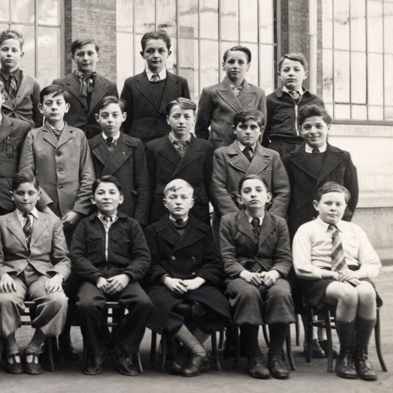

Portrait d’archive
Enfants Alharal
Jacques Jackie ALHARAL (S)
Jacques (Jacquy Jacquie) ALHARAL est né le 01/04/1928 à Lyon en France.
Rassemblé à Lyon, il est déporté à Auschwitz le 11/08/1944 par le convoi n°78.
Déporté avec ses parents Haim et Violette et sa grand-mère Sultana et sa sœur Suzanne par la Gestapo de Barbie.
Dernière adresse connue : 9, rue mortier (Lyon)
École fréquentée : Lycée Ampère - Bourse (Lyon)
Nom : ALHARAL
Prénom(s) : Jacques Jackie
Date naissance : 01/04/1928
Âge (ans) : 16
Lieu naissance : Lyon
Pays ou département : Rhône
Lieu rassemblement : Lyon
Dernière adresse : 9, rue Mortier
Ville : Lyon
Code postal : 69
N° Convoi : 78
Date déportation : 11/08/1944
Informations diverses : Fils de Simbul dite Violette, née Counio (25/08/1900 ou 1853 à Smyrne, Turquie) et de Haïm dit Vidal Alharal (22/12/1897 à Smyrne), négociant et frère de Suzanne. Jacques est élève au Lycée Ampère de 1934 à 1944. En 1944, toute la famille vit au 9 de la rue Mortier avec la grand-mère paternelle, Sultana Counio. Haïm exerçait la profession de gérant de la société « Comptoir de bonneterie du Nord » où il avait également des parts.
La famille est arrêtée le 24 juillet 1944, à leur appartement au 9 rue Mortier à Lyon, par Saïd Touati et son équipe de Groupe d’Action (GA), gestapistes français (Source: CC, Cluny, Collaborateurs : les GA de Lyon). Jacques est déporté avec ses parents Simbul dite Violette, née Counio (25/08/1900 ou 1853 à Smyrne, Turquie) et Haïm dit Vidal Alharal (22/12/1897 à Smyrne), négociants, sa grand mère Sultana Counio (née le 01/01/1853 à Smyrne, Turquie) et sa soeur Suzanne, 13 ans. Sa grand-mère est officiellement déclarée décédée le 16/08/1944 à Auschwitz, sa soeur le 15/11/1944 à Auschwitz et son père le 24/01/1945 à Auschwitz.
Jacques et sa mère seront libérés le 25 janvier 1945 et rapatriés en France le 10 mai 1945. Survivant avec sa mère, Jacques reprendra ses études au Lycée Ampère de 1945 à 1947. Il se mariera avec Pierrette née de Premilhat Alharal (32bis r Lieut-Col Girard 69007 LYON, 04 78 58 82 37). Jacques est décédé en 1986. Pierrette née De Premilhat, la veuve de Jacques Alharal, se portera partie civile au procès de Klaus Barbie en 1987. Elle décède le 25 juin 2019.
Alharal (Suzanne) née le 19 mars 1931 à Lyon 3e (Rhône) décédée le 15 novembre 1944 à Auschwitz (Pologne). Alharal (Haïm), né le 22 décembre 1897 à Smyrne (Turquie), décédé le 24 janvier 1945 à Auschwitz (Pologne). Alharal, née Counio (Sultana) le 20 septembre 1853 à Smyrne (Turquie), décédée le 16 août 1944 à Auschwitz (Pologne). JO
Lieu de déportation : Auschwitz
Lieu de départ : Lyon
Nombre total de déporté·e·s du convoi : 430
Gazé·e·s à l'arrivée : 128 (29,8 %)
Survivant·e·s en 1945 : 36 (8,4 %)
Suzanne ALHARAL
Suzanne ALHARAL est née le 19/03/1931 à Lyon en France.
Rassemblée à Lyon, elle est déportée à Auschwitz le 11/08/1944 par le convoi n°78. Elle est morte en déportation.
Déporté avec ses parents Haim et Violette et sa grand-mère Sultana et son frère Jacques par la Gestapo de Barbie.
Dernière adresse connue : 9, rue Mortier (Lyon)
Nom : ALHARAL
Prénom(s) : Suzanne
Date naissance : 19/03/1931
Âge (ans) : 13
Lieu naissance : Lyon
Pays ou département : Rhône
Lieu rassemblement : Lyon
Dernière adresse : 9, rue Mortier
Ville : Lyon
Code postal : 69
N° Convoi : 78
Date déportation : 11/08/1944
Informations diverses : Suzanne a été scolarisée à l’Ecole Mazenod (74 Rue Mazenod, 69003 Lyon), mais refusée pour résultats insuffisants. La famille est arrêtée le 24 juillet 1944, à leur appartement au 9 rue Mortier à Lyon, par Saïd Touati et son équipe de Groupe d’Action (GA), gestapistes français (Source: CC, Cluny, Collaborateurs : les GA de Lyon). Apparemment, Suzanne n’est pas internée à l’hôpital de l’ Antiquaille comme c’est le cas des enfants de moins de 14 ans. Elle est déportée avec ses parents, son frère Jacques, 16 ans et sa grand-mère Sultana née Counio (1953, İzmir, Turquie) par la Gestapo de Barbie, par le convoi 78 du 11/08/1944 de Lyon à Auschwitz. Elle est restée avec sa mère jusqu'en octobre 1944 et s'est ensuite séparée. Son numéro de camp de concentration sur son bras gauche était A25280 (Source: Alrosen). Suzanne est officiellement déclarée décédée le 15 novembre 1944 à Auschwitz.
Alharal (Suzanne) née le 19 mars 1931 à Lyon 3e (Rhône) décédée le 15 novembre 1944 à Auschwitz (Pologne). JO
Alharal (Haïm), né le 22 décembre 1897 à Smyrne (Turquie), décédé le 24 janvier 1945 à Auschwitz (Pologne). Alharal, née Counio (Sultana) le 20 septembre 1853 à Smyrne (Turquie), décédée le 16 août 1944 à Auschwitz (Pologne). JO
Lieu de déportation : Auschwitz
Lieu de départ : Lyon
Nombre total de déporté·e·s du convoi : 430
Gazé·e·s à l'arrivée : 128 (29,8 %)
Survivant·e·s en 1945 : 36 (8,4 %)
Jakob Ber GRAUBART [alias Léon ALHARAL ?]
Nom : GRAUBART
Prénom(s) : Jakob Ber
Date naissance : 04/05/1925 ou 22/09/1921
Âge (ans) : 19
Lieu naissance : Lyon
Pays ou département : Rhône
Lieu rassemblement : Lyon
Dernière adresse : 9, rue Mortier
Ville : Lyon
Code postal : 69003
N° Convoi : 70
Date déportation : 27/03/1944
Informations diverses : Léon Alharal habitait à Lyon à la même adresse que la famille de Haïm Alharal. Il était sans doute le grand-frère de Suzanne et de Jackie. Cuisinier, il est arrêté parce que juif à l'Hôtel du Belvédère à Saint-Nizier-du-Moucherotte. Transféré d’Auschwitz à Gross-Rosen, il est décédé à Buchenwald.
Autre prénom connu "Jakob Ber". Autre nom connu "GRAUBART". Cuisinier. Arrêté à l’Hôtel du Belvédère à Saint-Nizier-du-Moucherotte. Jakob Ber GRAUBART né le 22/09/1921 né en Belgique (?) (Source: State Archives, Brussels) mais est-il de la famille Alharal ?
Lieu de déportation : Auschwitz
Lieu de départ : Drancy
Nombre total de déporté·e·s du convoi : 1000
Gazé·e·s à l'arrivée : 480 (48 %)
Survivant·e·s en 1945 : 152 (15,2 %)